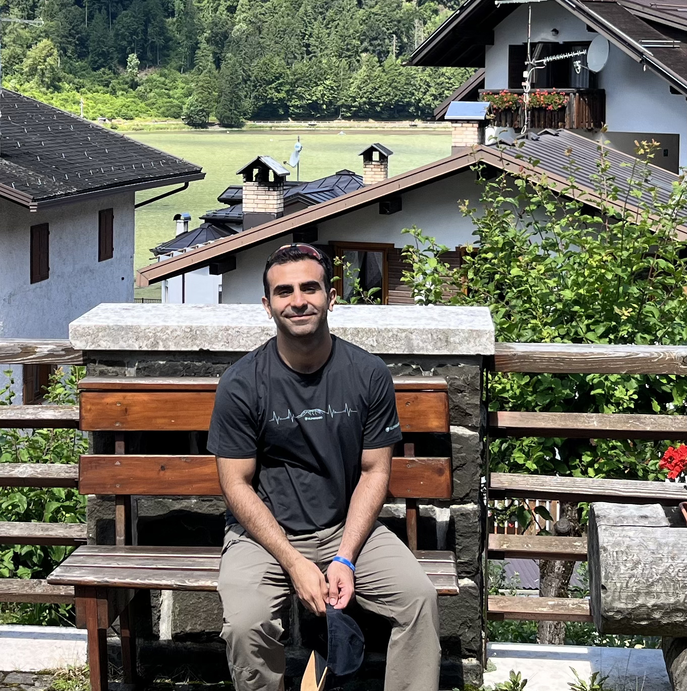

I am an AI Researcher and Simulation Engineer specializing in autonomous systems. My industrial experience in simulations, Reinforcement Learning, and AI is coupled with my academic research in computer vision. Previously at HUMDA Lab, I developed robust C++/ROS2 software stacks and generated synthetic data for the A2RL competition, focusing on delivering engineering excellence in high-speed autonomous racing.
I am an engineer on a trajectory correction, moving from designing physical machines to architecting persistent, physics-compliant digital universes. I believe the next generation of interaction requires digitizing reality with extreme fidelity. My research in industrial computer vision and my background in autonomous racing simulation are the foundational building blocks toward this future "Gridborne."